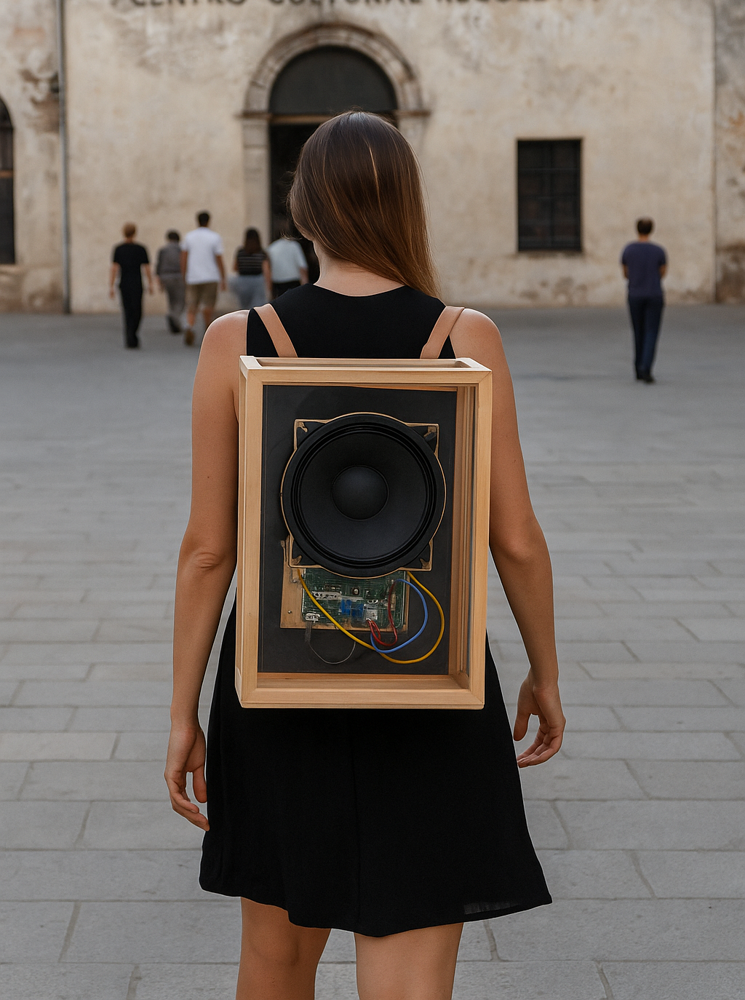

In Situ
Requerimientos del Diseño de Sonido
DISPOSITIVO SPEAKER BACKPACK

Lista de materiales con especificaciones
- Estructura de madera: Caja acústica construida en fenólico de 12–15 mm (o compensado fenólico/madera contrachapada de alta densidad), con dimensiones externas de 40 × 30 × 15 cm. El diseño debe incluir ensambles sellados, refuerzos internos básicos y tratamiento superficial (lijado + sellador o pintura protectora).
Función: alojar el parlante, electrónica y sistema de alimentación, garantizando estabilidad estructural y una resonancia controlada.
- Correas de cuero sintético ajustables: Dos unidades de material sintético reforzado, con hebillas o herrajes metálicos para ajuste en longitud. Ancho recomendado: 4–5 cm, para mayor comodidad en transporte tipo mochila. Color negro o neutro.
Función: facilitar la portabilidad del dispositivo en contexto performático.
Parlante de 8 pulgadas (full range): Driver dinámico de 8” de diámetro, con rango de frecuencia de al menos 60 Hz – 18 kHz, sensibilidad mínima 88 dB SPL (1W/1m) y potencia nominal de 15–30 W RMS. Impedancia estándar: 4–8 Ω. Diseño full-range que permita reproducir tanto voz como música sin necesidad de tweeter adicional.
Cables de conexión de audio: Cableado interno con conductores de cobre libre de oxígeno (OFC), sección mínima 0,5–1 mm² para la conexión del parlante al amplificador. Incluye terminales tipo faston o soldadura directa para asegurar firmeza y baja pérdida.
Amplificador de 10 W (mínimo): Módulo o unidad clase D de 2 × 10 W RMS (a 4–8 Ω), con eficiencia >80% y distorsión armónica total (THD) inferior al 0,1%. Alimentación por USB 5 V o entrada directa de batería (preferiblemente rango 5–12 V). Entrada de audio por jack 3,5 mm o RCA. Opción de controles de volumen integrados.
Power bank o batería de alimentación: Unidad de iones de litio recargable, capacidad mínima de 20.000 mAh, salida 5 V / 2 A (USB-A o USB-C). Preferible con protección contra sobrecarga, descarga profunda y cortocircuito. Alternativa: pack de celdas 18650 con BMS dedicado para integración interna.
ESP32: Placa de desarrollo con microcontrolador dual-core 32-bit Tensilica LX6, frecuencia de reloj 240 MHz, conectividad integrada WiFi 802.11 b/g/n y Bluetooth 4.2 BLE, memoria Flash mínima 4 MB y RAM de 520 KB. Compatible con desarrollo en Arduino IDE o ESP-IDF. Alimentación: 3,3 V regulados (entrada micro-USB 5 V).
Cables de audio para conexionado externo: Cableado auxiliar con blindaje de cobre trenzado, conectores de 3,5 mm estéreo, RCA o XLR según necesidad. Longitudes de 1,5–3 m, con terminaciones reforzadas y funda de PVC flexible. Usados para entrada de señal al amplificador desde fuentes externas.
Costo de realización
Precios unitarios y subtotales de realización (Septiembre 2025)
| Ítem | Cantidad | Precio unitario (ARS) | Subtotal (ARS) | Fuente / nota |
|---|---|---|---|---|
| Fenólico (corte para caja 40×30×15 cm, prorrateo desde plancha) | 1 (0,45 m² aprox.) | $5.625 | $5.625 | Precio prorrateado desde plancha fenólica |
| Correas de cuero sintético (para asa/sujetos) | 2 unidades (o tiras) | $19.500 c/u (estimado por tira/unidad similar al listado) | $39.000 | Listados de correa/cuero sintético |
| Parlante 8” (full-range) — opción mid-range | 1 unidad | $60.000 (estimado de mercado local, ver rangos) | $60.000 | Pongo un driver mid-range para uso performático. |
| Cables de audio (jack/RCA/XLR) (kits y adaptadores) | varios (corto + adaptadores) | $8.000 (pack aproximado) | $8.000 | Precios de cables y adaptadores tipo jack-RCA |
| Amplificador 10 W (módulo clase D) | 1 módulo | $7.279 | $7.279 | Módulo PAM8610 / amplificador 10W |
| Power bank / batería de alimentación (20.000 mAh) | 1 unidad | $40.000 (valor medio) | $40.000 | Hay ofertas desde ~$16k hasta >$100k según marca/capacidad |
| ESP32 (placa de desarrollo) | 1 unidad | $8.617 | $8.617 | Precio de placa de desarrollo ESP32 en comercios locales (TodoMicro). |
| Cables de conexionado (Dupont / jumpers) (kits para montaje) | 1 kit | $3.829 | $3.829 | Pack cables Dupont / protoboard |
| Mano de obra — carpintería (caja, cortes, pegado, lijado, acabado) | 4 h estimadas | $6.000 / h → $24.000 | $24.000 | Tarifa horaria estimada |
| Mano de obra — electr. / montaje electrónico (soldadura, montaje, cableado, pruebas) | 5 h estimadas | $6.000 / h → $30.000 | $30.000 | Incluye montaje del módulo amp, conexión a powerbank, montaje ESP32 y pruebas. |
| Pruebas y ajuste acústico / calibración | 2 h estimadas | $6.000 / h → $12.000 | $12.000 | Puesta a punto final en sala. |
Subtotal materiales + mano de obra: $226.349 (redondeado)
Contingencia (10%) — para variaciones, recortes extra, tornillería, adhesivos, conectores o inflación: $22.635
TOTAL ESTIMADO (con contingencia): $248.984 ARS (→ redondeo final ≈ $249.000 ARS)
REFUERZO DE SONIDO EN EL PATIO DEL TILO (Provisto por el CCR)
Se requiere un sistema de PA de 8 canales discretos distribuídos (como se indicará en el stage plan). Preferentemente se requiere un sistema de amplificación de sonido de marca reconocida en el mercado profesional.
En caso de ser posible, se sugiere que el sistema principal debe tener suficiente capacidad para producir sin distorsión una presión acústica promedio de 90 dB SPL (escala A) en posición de mezcla y 85 dB SPL en las localidades más alejadas del punto de escucha en el patio.
SISTEMA DE SONIDO EN LA CAPILLA (Provisto por el CCR)
Se requiere un sistema de PA de 2 canales discretos full range con subwoofer potenciados (activos) situados en la posición del órgano. Preferentemente se requiere un sistema de amplificación de sonido de marca reconocida en el mercado profesional.
Se sugiere que el sistema principal debe tener suficiente capacidad para producir sin distorsión una presión acústica promedio de 90 dB SPL (escala A) en posición de mezcla y 85 dB SPL en las localidades más alejadas del escenario.
El sistema de sonido debe estar conectado a un mixer de audio de pequeñas dimensiones en el que se pueda conectar una cable mini plug / plug.
FILM SONORO (Terraza)
Se requiere 30 auriculares inalámbricos que presentan al menos las siguientes características:
Tecnología: UHF inalámbrica (multi-canal)
Cancelación activa de ruido (se prefiere, pero opcional)
Rango de frecuencia: 30 Hz – 20 kHz
Baterías de ion-litio recargables incluidas
1 transmisores UHF con entrada estéreo (L R)
1 sistema de carga múltiple

Equipamiento (Requerimientos mínimos, provistos por el CCR)
• Amplificador de potencia en caso de que las cajas no sean potenciadas
• Consola Mixer: 4 entradas de línea, equalización por canal de 3 bandas (control de medios semiparamétricos).
• Altavoces: 2 cajas full range de mayores dimensiones compatibles con el recinto. 4 cajas de, menores dimensiones (16W mínimo), situadas en cada esquina del recinto y elevadas a la altura de los espectadores.
PRUEBA DE SONIDO (SOUNDCHECK)
Se debe contar como mínimo de 45 minutos para realizar la prueba de sonido sin público, sin contar el tiempo de montaje. El sistema de sonido debe estar montado y chequeado antes de la prueba de sonido.
MONTAJE
Tanto para el montaje como para el desmontaje se debe contar con 1 hora como mínimo.
EQUIPOS E INSTRUMENTOS UTILIZADOS (Provistos por el diseñador de sonido)
Laptop
Interfaz de Audio
Controlador MIDI táctil
Micrófono de condensador cardioide XY
Router para conexiones WIFI
Cables de Audio
Contacto
- Email: ezequielabregu@gmail.com